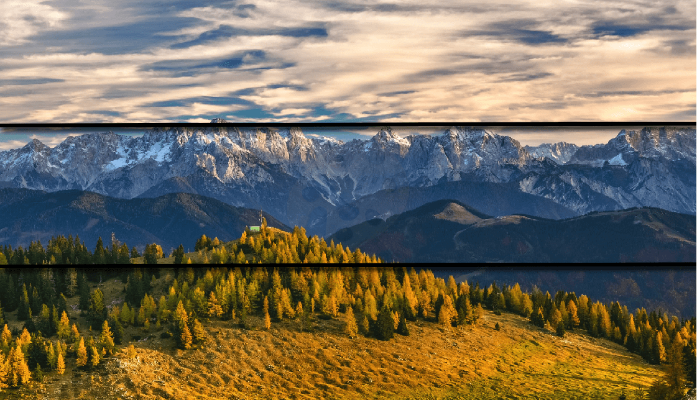
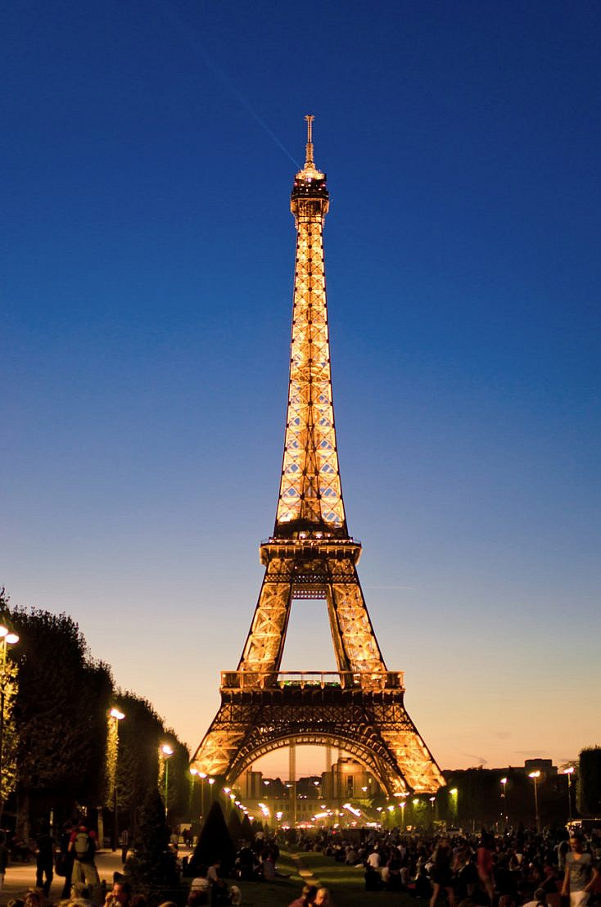
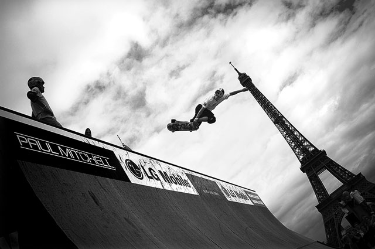

2.1-Encuadre
¿Qué es el encuadre?
Es la captura de la realidad exterior eligiendo y organizando los elementos que formarán parte de la composición del contenido de la imagen, es decir, aquello que el fotógrafo sitúa dentro de la fotografía y la porción de escena que elige captar.
El encuadre esta compuesto por distintos componentes que nos ayudan a conformarlo:
El Motivo
El motivo es lo que el fotógrafo quiere destacar de su fotografía. Para resaltar el mismo el fotógrafo debe llenar el encuadre con él, esto es, hacer que ese sea el objeto principal en la escena; de este modo excluiremos del encuadre otros objetos que puedan distraer la atención del espectador sobre el que el fotógrafo ha seleccionado.
La línea del horizonte suele ser una referencia visual clave para el ser humano. Normalmente esta debe mantenerse recta, horizontal. La percepción de una línea del horizonte inclinada suele llamar la atención y, si no está justificada, da al espectador la sensación de que los objetos se van a caer hacia ese lado, lo cual no suele producir buenas sensaciones.

Formatos del Encuadre:
- El encuadre horizontal sugiere quietud, tranquilidad y suele utilizarse normalmente para paisajes y para retratos de grupo.
- El encuadre vertical sugiere fuerza, firmeza y es el más apropiado normalmente para retratos (entre otras cosas porque los seres humanos somos más altos que anchos).
- 
- El encuadre inclinado transmite dinamismo, fuerza o inquietud y suele utilizarse como recurso ocasional para resaltar estas cualidades en el motivo de la fotografía.
- 
- ELEMENTO FOCAL:
ACTIVIDADES:
Pregunta de Elección Múltiple
Pregunta de Elección Múltiple 2
Pregunta de Elección Múltiple
Licencia: dominio público